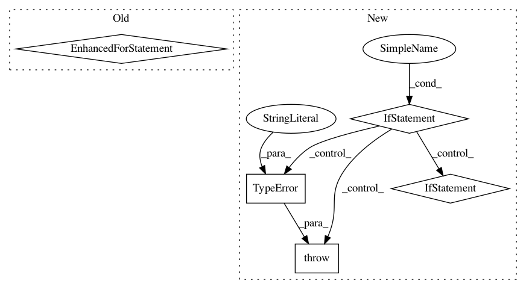

9a3f089b6dc01ef041529471df06748a82e62ca1,theano/gof/fg.py,FunctionGraph,orderings,#FunctionGraph#,643
Before Change
" will be non-deterministic.")
ords.setdefault(node, []).extend(prereqs)
// eliminate duplicate prereqs
for (node, prereqs) in iteritems(ords):
ords[node] = list(OrderedSet(prereqs))
return ords
def check_integrity(self):
After Change
str(feature.orderings) +
". Nondeterministic object is " +
str(orderings))
if len(orderings) > 0:
non_empty_ordering += 1
// If we get only 1 ordering, we reuse it directly.
if non_empty_ordering == 1:
ords = orderings
for node, prereqs in iteritems(orderings):
if not isinstance(prereqs, (list, OrderedSet)):
raise TypeError(
"prereqs must be a type with a "
"deterministic iteration order, or toposort "
" will be non-deterministic.")
// If we get more then 1 orderings, we need to
// combine them.
elif non_empty_ordering == 2:
ords = OrderedDict()
if non_empty_ordering > 1:
for node, prereqs in iteritems(orderings):
if not isinstance(prereqs, (list, OrderedSet)):
raise TypeError(
"prereqs must be a type with a "
"deterministic iteration order, or toposort "
" will be non-deterministic.")
ords.setdefault(node, []).extend(prereqs)
if non_empty_ordering > 1:
// eliminate duplicate prereqs if there is more then one
// empty ordering
for (node, prereqs) in iteritems(ords):
In pattern: SUPERPATTERN
Frequency: 4
Non-data size: 5
Instances
Project Name: Theano/Theano
Commit Name: 9a3f089b6dc01ef041529471df06748a82e62ca1
Time: 2017-05-30
Author: nouiz@nouiz.org
File Name: theano/gof/fg.py
Class Name: FunctionGraph
Method Name: orderings
Project Name: hyperopt/hyperopt
Commit Name: 2909332cb7d37f80b6f7096043a3784e5c9f4aa9
Time: 2011-10-31
Author: james.bergstra@gmail.com
File Name: hyperopt/gdist.py
Class Name: Union
Method Name: perform
Project Name: arviz-devs/arviz
Commit Name: 2bcdff553a234d5d3bb9b4c55b1db3159334fcca
Time: 2019-11-14
Author: seth.axen@gmail.com
File Name: arviz/stats/stats.py
Class Name:
Method Name: loo
Project Name: robertmartin8/PyPortfolioOpt
Commit Name: 2bda7e5dd9e0b232caca4a71b08bc7ccf8661a7d
Time: 2020-04-28
Author: martin.robertandrew@gmail.com
File Name: pypfopt/efficient_frontier.py
Class Name: EfficientFrontier
Method Name: max_sharpe